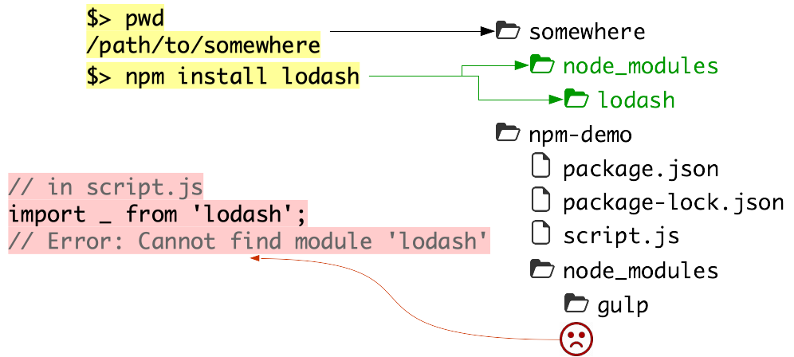

# npm Learn how to use [npm][npm], the most popular [Node.js][node] package manager, and the largest code registry in the world with over a quarter million packages. **You will need** * A Unix CLI **Recommended reading** * [Command line](../cli/) * [Node.js](../node/) --- class: center, middle ## What is npm? .breadcrumbs[<a href="#1">npm</a>] > "npm is the **package manager** for JavaScript. Find, share, and reuse packages of code from hundreds of thousands of developers — and assemble them in powerful new ways." --- ### Why use a package manager? .breadcrumbs[<a href="#1">npm</a> > <a href="#2">What is npm?</a>] * Use code or applications that **other developers** have written to solve particular problems * Regularly check if there are any **upgrades** and download them * **Share** your own code with the community or **reuse** code across projects <p class='center'><img src='images/shoulders-of-giants.jpg' width='100%' /></p> --- ### There are many package managers .breadcrumbs[<a href="#1">npm</a> > <a href="#2">What is npm?</a>] For programming languages: | Package manager | Language | | :--- | :--- | | Composer | PHP | | Maven | Java | | npm | Node.js | | RubyGems | Ruby | | pip | Python | For operating systems: | Package manager | OS | | :--- | :--- | | Advanced Package Tool (apt) | Debian, Ubuntu | | Homebrew (brew) | Mac OS X | | Yellowdog Updater, Modified (yum) | RHEL, Fedora, CentOS | --- ### The npm registry .breadcrumbs[<a href="#1">npm</a> > <a href="#2">What is npm?</a>] The [npm registry][npm] hosts over a million packages of reusable code — the largest code registry in the world. <img src='images/popular-packages.png' width='100%' /> It contains [more than double the next most populated package registry][modulecounts] (the Apache Maven repository). --- ### npm packages .breadcrumbs[<a href="#1">npm</a> > <a href="#2">What is npm?</a>] An npm **package** or **module** is basically a **reusable piece of code** that you can install and use. It's composed of: * A directory with some files in it (what will be installed) * A [package.json][package.json] file with some metadata about the package: ```json { "name": "my-project", "version": "1.3.2", "description": "It's great", "main": "index.js", "scripts": { "start": "node index.js" }, "dependencies": { "express": "^4.13.3", "lodash": "~3.1.0" }, "keywords": [ "awesome", "project" ], "author": "John Doe <john.doe@example.com>", "license": "MIT" } ``` --- class: center, middle ## The npm command .breadcrumbs[<a href="#1">npm</a>] npm is also a set of command line tools that work together with the registry. --- ### How do I use it? .breadcrumbs[<a href="#1">npm</a> > <a href="#7">The npm command</a>] ```bash $> npm help Usage: npm <command> where <command> is one of: access, adduser, bin, bugs, c, cache, completion, config, ddp, dedupe, deprecate, dist-tag, docs, edit, explore, get, `help`, help-search, i, `init`, `install`, install-test, it, link, list, ln, login, logout, ls, outdated, owner, pack, ping, prefix, prune, `publish`, rb, rebuild, repo, restart, root, run, run-script, s, se, search, set, shrinkwrap, star, stars, `start`, stop, t, tag, team, test, tst, un, uninstall, unpublish, unstar, up, update, v, version, view, whoami npm <cmd> -h quick help on <cmd> npm -l display full usage info npm help <term> search for help on <term> npm help npm involved overview ``` --- class: center, middle ## npm init .breadcrumbs[<a href="#1">npm</a>] Create a new package --- ### Interactively create a package.json file .breadcrumbs[<a href="#1">npm</a> > <a href="#9">npm init</a>] Create and move into a new project directory: ```bash $> cd /path/to/projects $> mkdir npm-demo $> cd npm-demo ``` Run `npm init`: ```bash $> npm init This utility will walk you through creating a package.json file. It only covers the most common items, and tries to guess sensible defaults. ... Press ^C at any time to quit. name: (npm-demo) version: (1.0.0) description: npm demo entry point: (index.js) test command: git repository: keywords: npm, demo author: John Doe <john.doe@example.com> license: (ISC) ``` --- ### What it looks like .breadcrumbs[<a href="#1">npm</a> > <a href="#9">npm init</a>] ```json { "name": "npm-demo", "version": "1.0.0", "description": "npm demo", "main": "index.js", "scripts": { "test": "echo \"Error: no test specified\" && exit 1" }, "keywords": [ "npm", "demo" ], "author": "John Doe <john.doe@example.com>", "license": "ISC" } ``` Read the [documentation][package.json] to find out everything you can configure in this file. --- class: center, middle ## npm install .breadcrumbs[<a href="#1">npm</a>] Install a package --- ### Installing packages .breadcrumbs[<a href="#1">npm</a> > <a href="#12">npm install</a>] When you install a package with the `npm install` command, npm creates a `node_modules` directory in the current working directory. It then saves the downloaded packages in that directory: ```bash $> npm install lodash npm-demo@1.0.0 /path/to/projects/npm-demo └── lodash@4.17.4 $> ls node_modules package.json package-lock.json $> ls node_modules lodash ``` <p class='center'><img src='images/npm-install.png' width='70%' /></p> --- ### Using installed packages .breadcrumbs[<a href="#1">npm</a> > <a href="#12">npm install</a>] Any script that is in the same directory as `package.json` and `node_modules` can `require()` the installed packages: Create a `script.js` file in the project and run it:: .grid-60[ ```js const lodash = require('lodash'); let numbers = [ 1, 1, 2, 3, 2 ]; console.log(lodash.uniq(numbers)); ``` ] .grid-40[ ```bash $> node script.js [ 1, 2, 3 ] ``` ] .container[ You have used the `uniq` function from the `lodash` package, which returns an array with its duplicate elements removed. <p class='center'><img src='images/npm-require.png' width='50%' /></p> ] --- ### Tracking installed packages .breadcrumbs[<a href="#1">npm</a> > <a href="#12">npm install</a>] Now remove the `node_modules` directory: ```bash rm -fr node_modules ``` Your script should no longer work since the `lodash` package is no longer available: ```bash $> node script.js module.js:471 throw err; ^ Error: Cannot find module 'lodash' ``` Deleting the `node_modules` directory is not a common real-world scenario, However, it can get quite large, so most people have it in their `.gitignore` file in their Git repositories, since you just have to run `npm install` to get your dependencies back. That means that when **cloning** your project, your colleagues **won't** get the `node_modules` directory. --- #### Re-installing dependencies manually .breadcrumbs[<a href="#1">npm</a> > <a href="#12">npm install</a> > <a href="#15">Tracking installed packages</a>] .grid-80[ You could reinstall all these packages manually, but imagine that you have **dozens** of dependencies. Do you want each team member to **re-type** the same `npm install` commands all the time? This is the typical list of dependencies for a **barebones** Express web application: ] .grid-20[ <img src='images/npm-many-dependencies.png' class='w100' /> ] --- ### npm saves the dependencies to package.json .breadcrumbs[<a href="#1">npm</a> > <a href="#12">npm install</a>] npm automatically tracks the dependencies you install. There is a `--save` option that was required for that in earlier versions, but it's the default now. When you ran `npm install`, a new `dependencies` section should have appeared in your `package.json` file: <p class='center'><img src='images/npm-install-save.png' class='w70' /></p> --- ### npm install with a package.json .breadcrumbs[<a href="#1">npm</a> > <a href="#12">npm install</a>] Delete the `node_modules` directory again and simply run `npm install` with no other arguments: ```bash $> rm -fr node_modules $> npm install npm-demo@1.0.0 /path/to/projects/npm-demo └── lodash@4.17.4 ``` npm has installed the `lodash` package again. If you **don't specify a package** to install, the install command will **read** the `package.json` and **install the dependencies** listed there. .grid-40[ The `package-lock.json` also contains the precise versions of the packages you installed. That way, your entire team can reproduce the exact same package structure as on your machine. ] .grid-60[ <img src='images/npm-install-no-args.png' class='w100'> ] --- ### The --save-dev option .breadcrumbs[<a href="#1">npm</a> > <a href="#12">npm install</a>] You often use two kinds of packages: * **Production dependencies** that your program or application needs to run (e.g. a database client) * **Development dependencies** that you use during development but do not need to run the application (e.g. a live-reload server) .grid-45[ Use the `--save-dev` option to save your development dependencies: ```bash $> npm install --save-dev gulp ``` A `devDependencies` section will be added to your `package.json`: ] .grid-55[ <p class='center'><img src='images/npm-install-save-dev.png' class='w100'></p> ] --- ### The --production option .breadcrumbs[<a href="#1">npm</a> > <a href="#12">npm install</a>] .grid-45[ Use `npm install` with no arguments when you want to install **all dependencies**, including development dependencies: ```bash $> npm install ``` <img src='images/npm-install-dev.png' class='w100'> ] .grid-55[ Use the `--production` option to install **only production dependencies** (e.g. on a server, where you will only need to *run* your program and will not need your development tools): ```bash $> npm install --production ``` <img src='images/npm-install-prod.png' class='w100'> ] --- ### The --global option .breadcrumbs[<a href="#1">npm</a> > <a href="#12">npm install</a>] Some packages can be installed **globally**. Use the `--global` or `-g` option: ```bash $> npm install --global http-server ``` **If you get an `EACCES` error**, execute the following commands: ```bash $> mkdir ~/.npm-global $> npm config set prefix '~/.npm-global' ``` And add this line to your CLI configuration file (e.g. `~/.bashrc` or `~/.bash_profile`): ```bash export PATH=~/.npm-global/bin:$PATH ``` Re-open your CLI, then retry the installation, which should work this time: ```bash $> npm install --global http-server ``` --- #### Global packages .breadcrumbs[<a href="#1">npm</a> > <a href="#12">npm install</a> > <a href="#21">The --global option</a>] Global packages are **NOT installed in the current directory**. They are installed in a **system directory** and are **global to your machine** (you don't need to re-install them for each project). <p class='center'><img src='images/npm-install-global.png' class='w70' /></p> .grid-50[ Global packages provide **new commands** that you can use in your CLI. In this case, the `http-server` package is a simple command-line HTTP server: ] .grid-50[ ```bash $> http-server Starting up http-server, serving ./ Available on: http://127.0.0.1:8080 http://10.178.123.132:8080 Hit CTRL-C to stop the server ``` ] --- #### Where are global packages installed? .breadcrumbs[<a href="#1">npm</a> > <a href="#12">npm install</a> > <a href="#21">The --global option</a>] Use `npm config` to find out where global packages are installed on your machine: ```bash $> npm config get prefix /usr/local $> ls /usr/local/lib/node_modules http-server ``` You *cannot* use `--save` with global packages. You **do not need to** since they are global to your machine and available anywhere in the CLI. However, if you **reset** your machine or Node.js installation, you will have to **reinstall** manually. --- class: center, middle ## Common mistakes .breadcrumbs[<a href="#1">npm</a>] It happens. --- ### Missing `package.json` file .breadcrumbs[<a href="#1">npm</a> > <a href="#24">Common mistakes</a>] If you **forgot to add a `package.json` file** to your project, npm will still install your dependencies and log a warning that is **easy to miss**: ```bash $> npm install --save lodash npm WARN `saveError` ENOENT: no such file or directory, open '/path/to/projects/npm-demo/package.json' /path/to/projects/npm-demo └── lodash@4.17.4 ``` <p class='center'><img src='images/npm-missing-package.png' class='w80'></p> --- ### Wrong directory .breadcrumbs[<a href="#1">npm</a> > <a href="#24">Common mistakes</a>] Npm will not know if you are in the **wrong directory**. It will simply **install packages there**. Of course, you will **NOT** be able to `require()` them from your project: <p class='center'></p> --- class: center, middle ## The behavior of `require()` .breadcrumbs[<a href="#1">npm</a>] --- ### Requiring your own modules .breadcrumbs[<a href="#1">npm</a> > <a href="#27">The behavior of `require()`</a>] You can require your own Node.js scripts with **relative file paths**: .grid-50[ <p class='center'><img src='images/require-relative-module.png' class='w100' /></p> ] .grid-50[ <p class='center'><img src='images/require-parent-module.png' class='w100' /></p> ] .container[ Beware of **circular dependencies**. In this example, you should do one or the other, **not both**. ] --- ### Requiring packages installed with npm .breadcrumbs[<a href="#1">npm</a> > <a href="#27">The behavior of `require()`</a>] You can require packages you installed with npm **by their name**: <p class='center'><img src='images/require-local-package.png' class='w60' /></p> --- #### Global packages installed with npm .breadcrumbs[<a href="#1">npm</a> > <a href="#27">The behavior of `require()`</a> > <a href="#29">Requiring packages installed with npm</a>] You **CANNOT** require packages you installed **globally** with npm. They provide **new commands** but cannot be used in code: <p class='center'><img src='images/require-global-package.png' class='w80' /></p> --- ### Requiring core Node.js modules .breadcrumbs[<a href="#1">npm</a> > <a href="#27">The behavior of `require()`</a>] When you give **a name** to `require()`, it will also look for a **core Node.js modules** with that name: <p class='center'><img src='images/require-core-module.png' class='w70' /></p> --- ### Require summary .breadcrumbs[<a href="#1">npm</a> > <a href="#27">The behavior of `require()`</a>] Statement | What is required :--- | :--- `require('./script')` | The `script.js` file in the current directory (relative to the file using `require()`) `require('./dir/script')` | The `script.js` file in the `dir` directory (relative to the file using `require()`) `require('../script')` | The `script.js` file in the parent directory (relative to the file using `require()`) `require('my-module')` | The `my-module` npm package (if found in `node_modules` in the same directory *or any parent directory*)<br/>**OR**<br/>The core Node.js module with that name (if there is one) --- ## More complex packages .breadcrumbs[<a href="#1">npm</a>] The npm registry has many packages, some small, some big. Let's install [Express][express], a web application framework: ```bash $> npm install express ``` Create a `server.js` file with the following content: ```js const express = require('express'); const app = express(); app.get('/', function(req, res) { res.send('Hello ' + req.query.name + '!'); }); app.listen(3000, function () { console.log('Example app listening on port 3000!'); }); ``` --- #### Run a web app .breadcrumbs[<a href="#1">npm</a> > <a href="#33">More complex packages</a>] Run the file: ```bash $> node server.js Example app listening on port 3000! ``` Visit [http://localhost:3000?name=World](http://localhost:3000?name=World) in your browser. You have a running web application server! --- class: center, middle ## npm scripts .breadcrumbs[<a href="#1">npm</a>] npm is not only a package *installer*, it's also a package **manager** --- ### Lifecycle scripts .breadcrumbs[<a href="#1">npm</a> > <a href="#35">npm scripts</a>] For programs that can be **long-lived**, such as **web servers**, npm defines **standard lifecycle scripts** that you should use to control your program. Here are a few: Command | Purpose :--- | :--- `npm start` | Run your program `npm stop` | Stop your program `npm restart` | Restart your program `npm test` | Run automated tests for your program Read the [documentation][npm-scripts] to learn about all the available lifecycle scripts. --- ### The scripts property .breadcrumbs[<a href="#1">npm</a> > <a href="#35">npm scripts</a>] .grid-40[ In order for your program to **respond** to these `npm start|stop|...` commands, the corresponding **scripts** should be defined in your `package.json` file under the `scripts` property: ] .grid-60[ <p class='center'><img src='images/npm-start.png' class='w100' /></p> ] .container[ Here we define that running `npm start` should **execute** the `server.js` file with Node.js: ```bash $> npm start > npm-demo@1.0.0 start /path/to/projects/npm-demo > node server.js Example app listening on port 3000! ``` ] --- ### Custom scripts .breadcrumbs[<a href="#1">npm</a> > <a href="#35">npm scripts</a>] You can also define your own custom scripts: ```json { "name": "npm-demo", * "scripts": { * "hello": "echo Hello World" * }, ... } ``` These scripts are run with `npm run <script>`: ```bash $> npm run hello > npm-demo@1.0.0 serve-static /path/to/projects/npm-demo > echo Hello World *Hello World ``` --- class: center, middle ## npm publish .breadcrumbs[<a href="#1">npm</a>] Publish a package --- ### What do I need to publish? .breadcrumbs[<a href="#1">npm</a> > <a href="#39">npm publish</a>] You need a valid `package.json` file. You should also set the `main` property: ```json { "name": "npm-demo", * "main": "./script.js", ... } ``` When people `require` your module after installing it, they will get the same result as if they had required that file. --- ### Publishing .breadcrumbs[<a href="#1">npm</a> > <a href="#39">npm publish</a>] Publishing is as simple as running the `npm publish` command in the directory where your `package.json` file is located: ```js npm publish ``` You of course need an **npm account**. You can only publish a new package if the package name is not already used. Names are registered on a **first-come, first-serve** basis. --- ### Avoiding publication .breadcrumbs[<a href="#1">npm</a> > <a href="#39">npm publish</a>] Sometimes you write code that should not be published: * A website (something where using `require` makes no sense) * A private package with confidential information In these cases, you can set the `private` property of the `package.json` file: ```json { "name": "npm-demo", * "private": true, ... } ``` `npm publish` will then refuse to publish the package. --- ## Resources .breadcrumbs[<a href="#1">npm</a>] **Documentation** * [Command line usage][npm-cli] * [package.json][package.json] [express]: https://expressjs.com [modulecounts]: http://www.modulecounts.com [node]: https://nodejs.org [npm]: https://www.npmjs.com [npm-cli]: https://docs.npmjs.com/cli/npm [npm-fix-permissions]: https://docs.npmjs.com/getting-started/fixing-npm-permissions [npm-scripts]: https://docs.npmjs.com/misc/scripts [package.json]: https://docs.npmjs.com/files/package.json